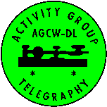

AGCW:
Activity Group CW-DL
is a CW club from Germany. It's got about 2000 members,
most of them in German speaking countries.
The club issues a semi-yearly magazine which is written in German.
I volunteer for AGCW as so-called ECM being responsible
for contacts to other CW clubs within the EUCW.
Membership in AGCW is open to any CW friend.
AGCW has close ties with the generic ham radio club in Germany DARC.
Back to ECM listing
Back to EUCW Start Page